|
Rodafans on tour Charlton Athletic (13-14-15 oktober 2001) |
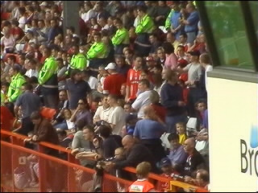
De supporters van de bezoekende club, Middlesbrough, zitten gewoon
naast de Charlton-fans slechts gescheiden door een rij stewards.
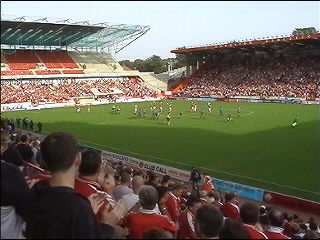
De spelers komen het veld op en enkele clubliedjes weerklinken door
de luidsprekers. Niemand zingt mee zoals bij ons. Ook gedurende de
wedstrijd wordt er niet gezongen. Aanmoedigingskreten worden maximaal
drie keer herhaald en dan is het weer stil. De beleving is echter super!
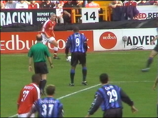
De nummer 9 bij Middlesbrough is een "oude" bekende: Paul Ince.
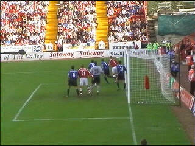
Charlton domineerde de eerste helft en kreeg massa's corners.
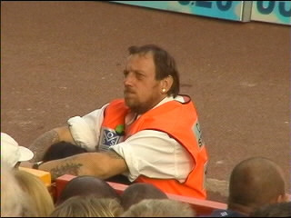
Er is geen gracht en er is geen hekwerk. Je kunt in principe zomaar
het veld op wandelen, maar niemand die het doet! De stewards zitten
de wedstrijd gewoon uit.
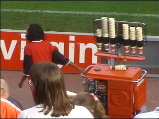
In de pauze komt de koffiejuf om de gehandicapten te voorzien van
koffie, thee en soep. Er wordt hier heel veel voor de minder-valide
supporters geregeld!
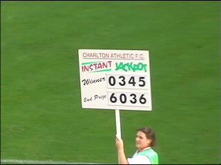
De prijswinnende lotnummers die live via een enorme lotto-machine
worden getrokken worden door een "miss" middels een bord aan het
publiek getoond.
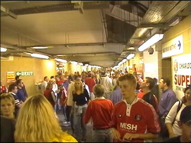
In de "omloop" stonk het naar pis, zweet en bier. Je kon hier nauwelijks
ademhalen. Een biertje meenemen op de tribune is verboden: "No alcohol
beyond this point". 5 minuten na de spelhervatting is het uitgestorven in
deze gang waarna alle eet- en drinkloketten definitief sluiten.
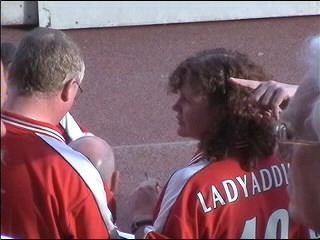
Onze vrienden Steve en Tracy (Lady Addick).
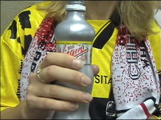
In het PLS klagen sommige mensen over de E3-cola, maar hier moet
je het doen met Virgin cola, en dat is pas echt bocht!
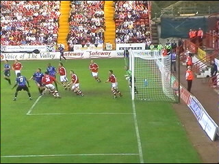
In de tweede helft is de pijp bij Charlton leeg en krijgen de Boro's
de beste kansen.
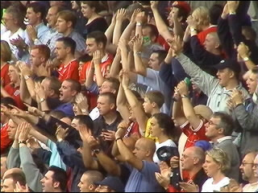
Close-up van de gasten.
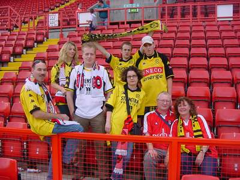
En eentje van ons zelf.